10 部片单 · 恐怖 / 科幻 / 惊悚 / 悬疑 / 剧情
| # | 片名 | 类型 | 评分 / 状态 |
|---|---|---|---|
| 01 | 红潮风暴 | 动作 / 惊悚（美国 · 一艘潜艇里两个人的分歧） | 8.0 / 89% / 未收录 |
| 02 | 极度深寒 | 动作 / 科幻（美国 / 加拿大 · 一艘豪华邮轮上的海怪） | 7.6 / 31% / 未收录 |
| 03 | 深海狂鲨 | 科幻 / 惊悚（美国 / 澳大利亚 · 一群被改聪明的鲨鱼） | 7.2 / 60% / 54 |
| 04 | 完美风暴 | 剧情 / 灾难（美国 · 一艘渔船的最后一次出海） | 7.6 / 46% / 59 |
| 05 | 猎杀U-571 | 动作 / 战争（美国 / 法国 · 一艘德军潜艇与一台密码机） | 8.1 / 68% / 62 |
| 06 | K-19：寡妇制造者 | 剧情 / 惊悚（英国 / 德国 / 美国 · 一艘苏联核潜艇的第一次远航） | 7.8 / 59% / 58 |
| 07 | 汉江怪物 | 科幻 / 恐怖（韩国 · 一条河与一个家庭） | 7.6 / 93% / 85 |
| 08 | 海洋深处 | 剧情 / 冒险（美国 / 澳大利亚 / 西班牙 · 一艘捕鲸船与一头鲸） | 7.5 / 42% / 47 |
| 09 | 鲨海 | 惊悚 / 恐怖（英国 / 美国 · 一个沉到 47 米下的笼子） | 6.0 / 53% / 52 |
| 10 | 库尔斯克 | 剧情 / 灾难（法国 / 比利时 / 卢森堡 · 一艘沉在巴伦支海底的潜艇） | 6.8 / 55% / 50 |
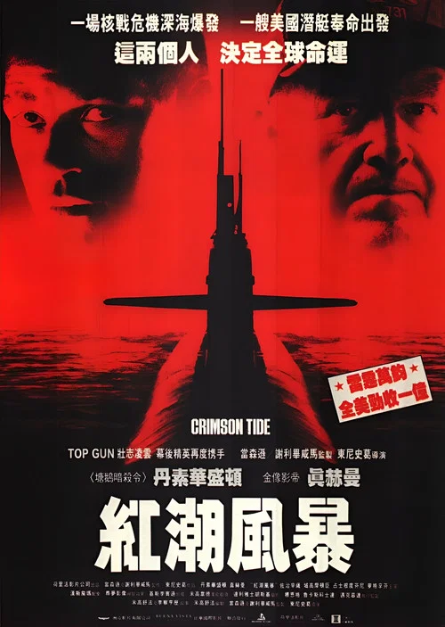
红潮风暴 Crimson Tide
「我们在这里是为了守护民主，不是实践民主。」
剧情梗概
冷战结束之后，俄罗斯一个分离出去的共和国握着核弹头。美国核潜艇阿拉巴马号奉命进入发射阵位。就在是否发射的关键时刻，通讯系统坏了——他们收到一条命令，却没法确认它是不是最后一条。艇长拉姆齐要发射，新来的副艇长亨特不肯，于是他把艇长关了起来。
亮点
- 托尼·斯科特导演，制片是唐·辛普森与杰里·布鲁克海默；剧本由迈克尔·希弗与理查德·P·亨里克写，昆汀·塔伦蒂诺参与了台词润色但没有署名。
- 北美首周末 1860 万美元登顶，全球票房约 1.573 亿美元；奥斯卡三项提名（剪辑、音响、音效剪辑）。
- 汉斯·季默的配乐拿了 1996 年格莱美最佳影视器乐作曲——把海军圣咏《永恒之父》混进合成器的那段主题，是他自己最满意的作品之一。
- 美国海军拒绝合作（剧本里有兵变），剧组改用法国海军的福煦号航母与一艘凯旋级核潜艇完成了大部分拍摄。
- 丹泽尔·华盛顿演副艇长亨特，吉恩·哈克曼演艇长拉姆齐；此后华盛顿与托尼·斯科特又合作了四次。
- 豆瓣 8.0 / 烂番茄 89% / Metacritic 未收录 / IMDb 7.3：本期烂番茄并列第二，是本期商业成绩最好的一部。
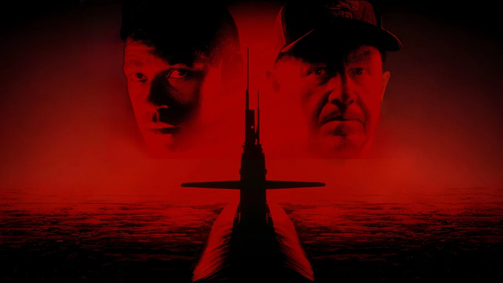
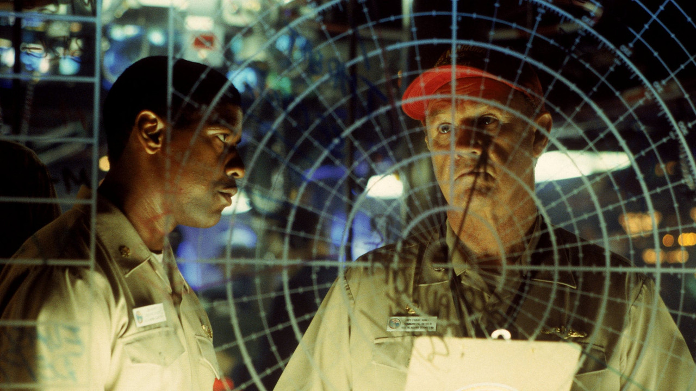
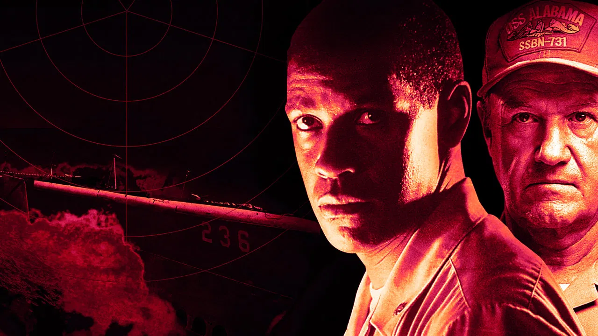
导演与主创 · 他们的历史作品
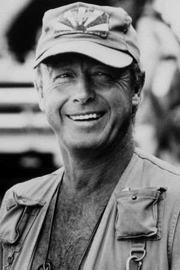
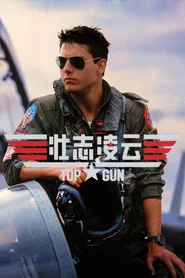
壮志凌云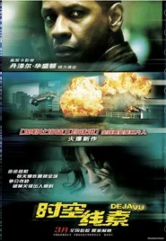
时空线索 国家公敌
国家公敌
 伸冤人
伸冤人 艾利之书
艾利之书 训练日
训练日 迫降航班
迫降航班
 天才一族
天才一族 不可饶恕
不可饶恕 法国贩毒网国家公敌
法国贩毒网国家公敌短评（轻微剧透）
轻微剧透：真正的转折不在谁对谁错，在他们终于确认了那条被中断的命令——结果证明亨特是对的，但真正让这部片成立的，是拉姆齐从头到尾也没有错。轻微剧透：托尼·斯科特把潜艇拍成了一个「程序」的空间：每一步都有口令、有复述、有确认，所以那场兵变才有重量——它不是两个人的冲突，是一个人决定不再走程序。结尾军事法庭的那句判词，是全片唯一一次把问题说出口。
为什么值得一看
想看「两个人怎么把一艘潜艇撑满两小时」的人；能接受全片几乎没有外景、军事术语密集、结局略和稀泥的观众。R 级，含粗口与威胁画面，建议初中以上观看。内地未映，流媒体可看。看完想继续：《猎杀U-571》《K-19：寡妇制造者》《从海底出击》。
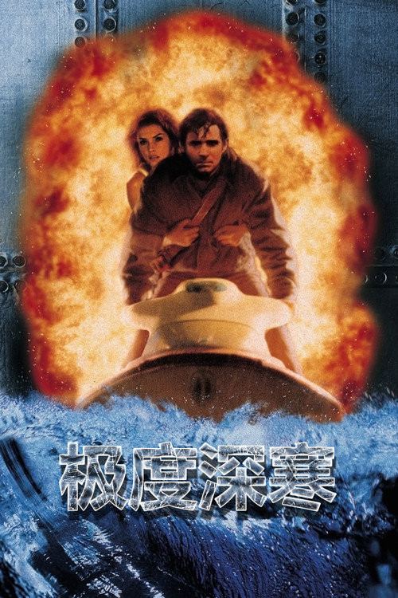
极度深寒 Deep Rising
「这艘船上有什么东西，把所有人都吃掉了。」
剧情梗概
一伙劫匪劫持了一艘拖船，要去南太平洋上劫一艘豪华邮轮「阿尔戈号」。等他们登船，船上一个人都没有——只有血、被打穿的舱壁，和两个幸存者：女贼崔莲和船东代表西蒙。他们说的东西没人信，直到它从下层甲板爬上来。
亮点
- 斯蒂芬·索莫斯自编自导，这是他拍《木乃伊》之前的最后一部 B 级片；此后他成了环球冒险片的主力导演。
- 北美票房仅约 1120 万美元，是当年著名的票房失利案例——这也是它迟迟没有续集的原因。
- 怪物由 Boss Film 与 Dream Quest Images 两家特效公司合作完成，采用实物模型与电脑动画混合；它那套触手与尖牙的设计，是 90 年代末海怪片的标志性造型。
- 片中怪物的叫声是把猪、海豹、僧帽猴、无喉人与福音歌手的声音混录而成的；那些超自然的低频声，是在一个 3000 加仑不锈钢罐里用干冰录出来的。
- 特里特·威廉斯演劫匪头子芬尼根，全片他在跑、在骂、在扔炸药；法米克·詹森演崔莲，是船上两个幸存者之一。
- 豆瓣 7.6 / 烂番茄 31% / Metacritic 未收录 / IMDb 6.1：本期专业评价最低的一部，华语观众明显高于欧美影评。
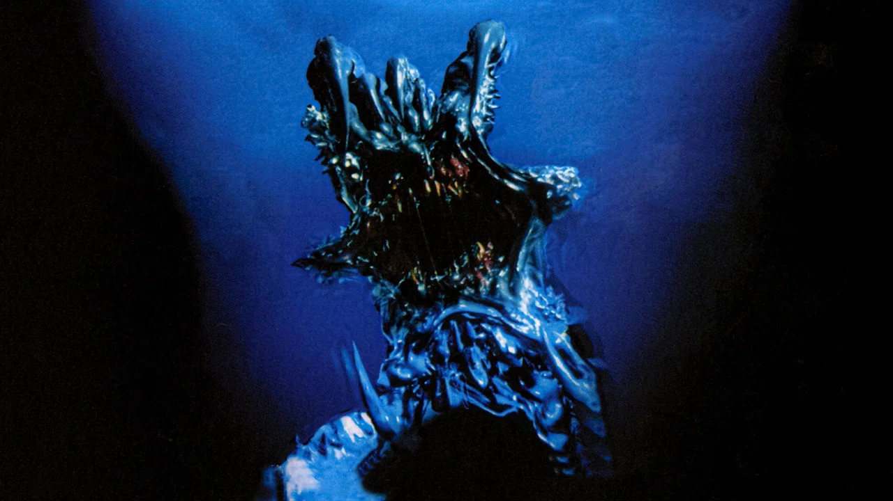
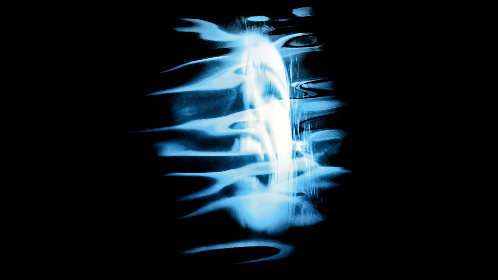
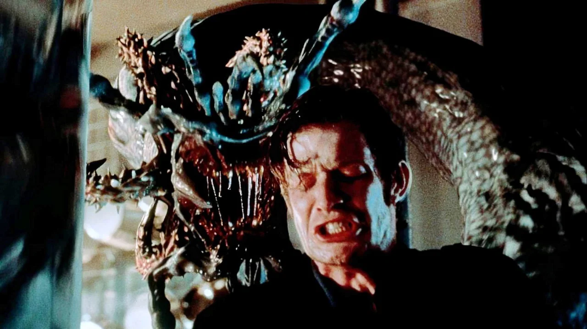
导演与主创 · 他们的历史作品
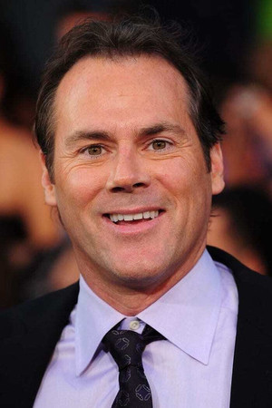
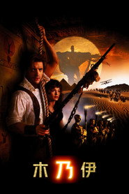
木乃伊 范海辛
范海辛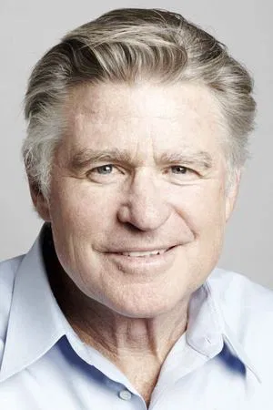
 127小时
127小时 美国往事
美国往事 飓风营救
飓风营救 X战警
X战警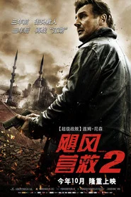
飓风营救2 韩赛尔与格蕾特：女巫猎人
韩赛尔与格蕾特：女巫猎人短评（轻微剧透）
轻微剧透：真正的转折在他们终于搞清楚这艘船为什么漂在海上——不是被袭击，是被吃掉了，而吃掉它的东西还留在船上。轻微剧透：索莫斯最聪明的一处，是把怪物藏了整整五十分钟：前面只有声音、只有拖痕、只有船体在沉，等你终于看清它，反而不如想象中吓人——而这部片很清楚这一点，所以后半段改成一路炸。结尾小岛上的那一声吼是它留给续集的门，可惜那扇门再没打开过。
为什么值得一看
想看「90 年代 B 级海怪片长什么样」的人；能接受人物是工具人、台词粗糙、特效在今天看略旧的观众。R 级，含血腥与撕咬画面，建议高中以上观看。内地未映。看完想继续：《深海狂鲨》《汉江怪物》《狂蟒之灾》。
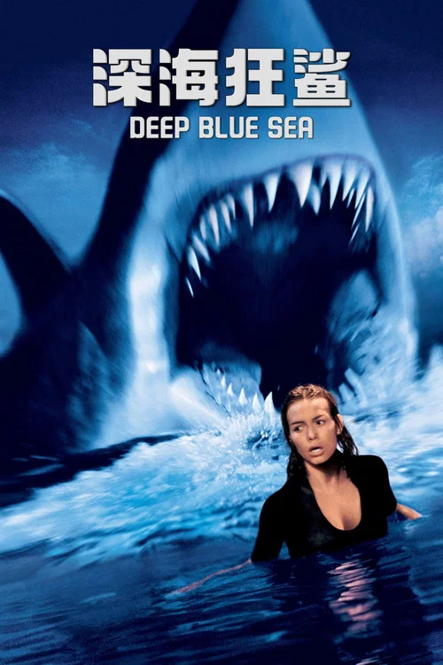
深海狂鲨 Deep Blue Sea
「它们现在比我们想的聪明。」
剧情梗概
一座漂在海上的研究中心里，苏珊·麦卡利斯特博士正在从鲨鱼脑中提取蛋白质，用来治疗阿尔茨海默病。为了拿到更多蛋白，她把鲨鱼的脑容量改大了。这一步做完了：鲨鱼不但更强壮，还开始思考。风暴来了，平台开始进水，而水下那三只已经学会了怎么把人分开。
亮点
- 雷尼·哈林导演（《虎胆龙威2》《绝岭雄风》），剧本由邓肯·肯尼迪与鲍尔斯兄弟写。
- 成本约 6000 万美元，全球票房约 1.65 亿美元，是 1999 年北美暑期档的爆米花代表之一。
- 鲨鱼用机械模型与电脑动画混合完成，大量水下镜头是真在开放式水箱里拍的——演员与三条机械鲨鱼同框的戏占了全片大半。
- 塞缪尔·杰克逊演投资方法兰克林，他出场不到半小时就被吃了；这场戏是全片最著名的「骗观众」设计。
- 萨弗蓉·布罗斯演苏珊博士，一个为了救人而做了错事的人；托马斯·简演鲨鱼专家卡特，是三个主角里唯一一直想跑的。
- 豆瓣 7.2 / 烂番茄 60% / Metacritic 54 / IMDb 5.9：专业评价中下，但它在鲨鱼片观众里的地位远高于分数。
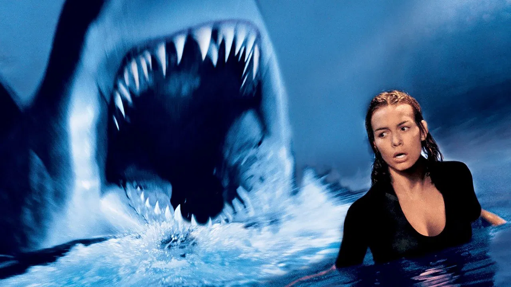
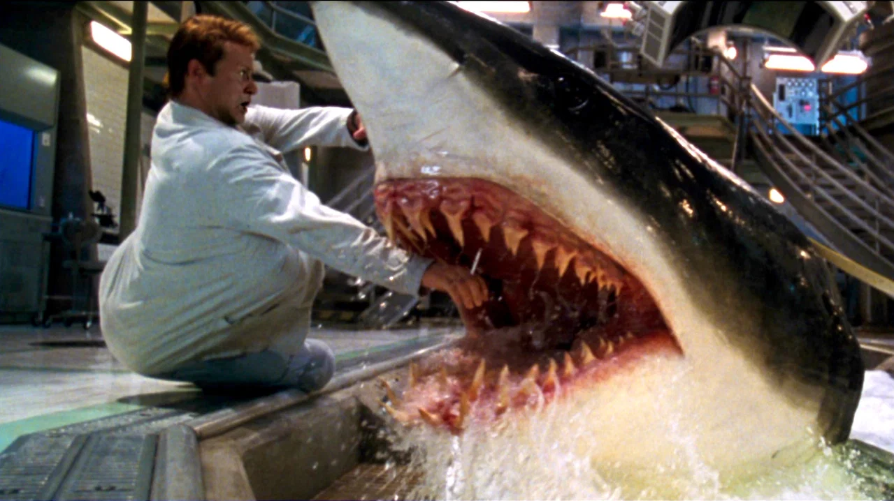
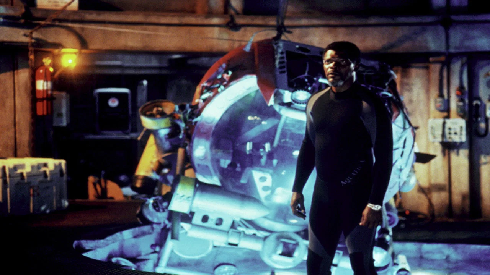
导演与主创 · 他们的历史作品
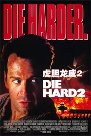
虎胆龙威2 绝岭雄风
绝岭雄风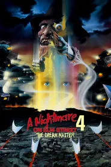
猛鬼街4：梦幻主宰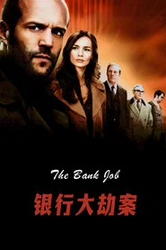
银行大劫案 特洛伊
特洛伊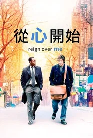
从心开始
 迷雾
迷雾 惩罚者
惩罚者 1922
1922 捕梦网
捕梦网短评（轻微剧透）
轻微剧透：真正的转折在塞缪尔·杰克逊被吃掉的那一刻——到那时你才明白这部片没有安全区，而它愿意在二十分钟里就把最大的明星处理掉。轻微剧透：哈林把「科学怪谈」拍成了一场水位的竞赛：每过十分钟，水就涨一级，能站的地方就少一层，所以这部片真正紧张的不是鲨鱼，是空间。结尾那只鲨鱼从水里跃起来的镜头，是全片唯一一次让摄影机跟着它一起出水。
为什么值得一看
想看「鲨鱼片能把套路玩到什么程度」的人；能接受人物扁平、科学设定离谱、特效在今天看有年代感的观众。R 级，含血腥与撕咬画面，建议高中以上观看。内地未映。看完想继续：《大白鲨》《鲨海》《极度深寒》。
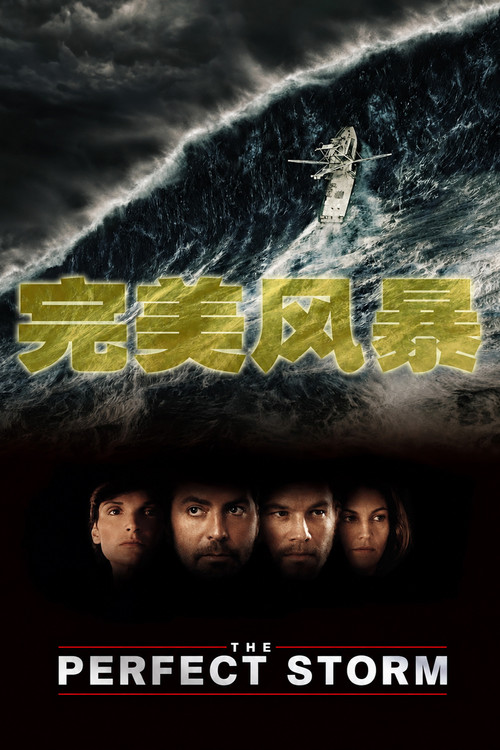
完美风暴 The Perfect Storm
「再等一天，鱼就要跑了。」
剧情梗概
1991 年马萨诸塞州格洛斯特。船长比利·泰恩这一季运气不好，他决定再出海一次，去更远的海域。那一年的北大西洋上，一股飓风与两股天气系统撞在了一起，形成了气象史上罕见的「完美风暴」。剑鱼船「安德里亚·盖尔号」和船上的六个人就在里面。
亮点
- 沃尔夫冈·彼得森导演，改编自塞巴斯蒂安·荣格尔 1997 年的同名纪实作品；往期第 40 期推过的《极度恐慌》也是他导的。
- 成本约 1.3 亿美元，全球票房约 3.287 亿美元；奥斯卡两项提名（音响、视觉效果），英国电影学院奖最佳特效成就奖。
- 剧组在真实海况里拍了大量镜头：那艘道具船「格蕾斯女士号」在拍摄期间共航行了 16000 海里。
- 乔治·克鲁尼演船长比利·泰恩，马克·沃尔伯格演新手渔民鲍比·沙特福德；戴安·琳恩与玛丽·伊丽莎白·马斯特兰托尼奥演留在岸上等的人。
- 影片没有给出最后的答案：船体残骸被发现过，六个人始终没有找到——这个结尾是照着真实事件写的。
- 豆瓣 7.6 / 烂番茄 46% / Metacritic 59 / IMDb 6.5：专业评价中下，是彼得森生涯里评价分化最大的一部。
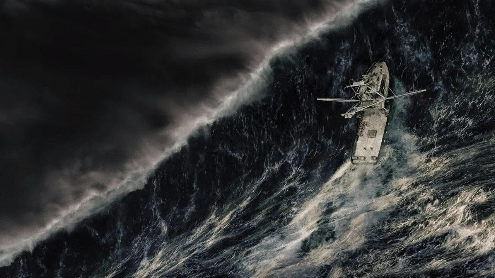
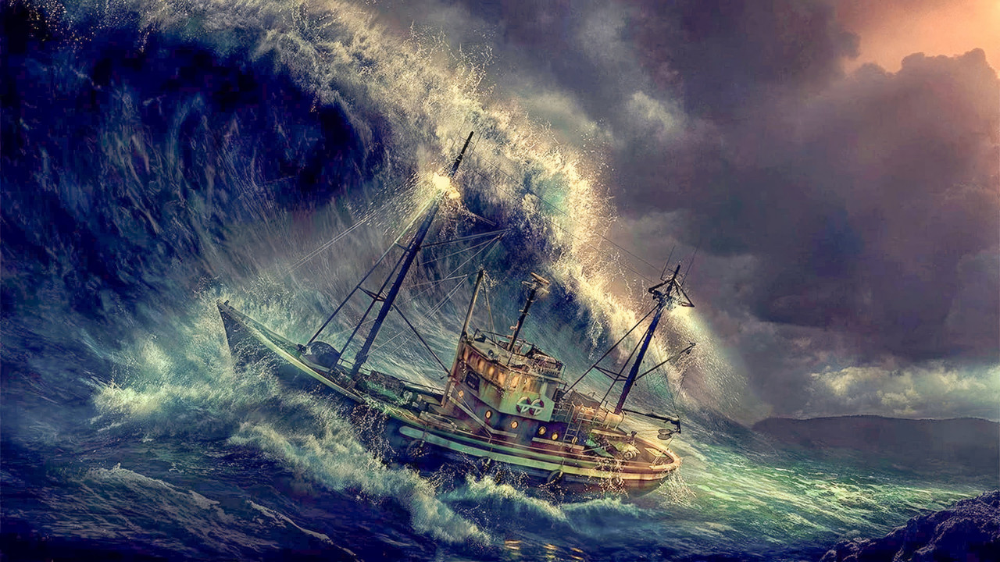
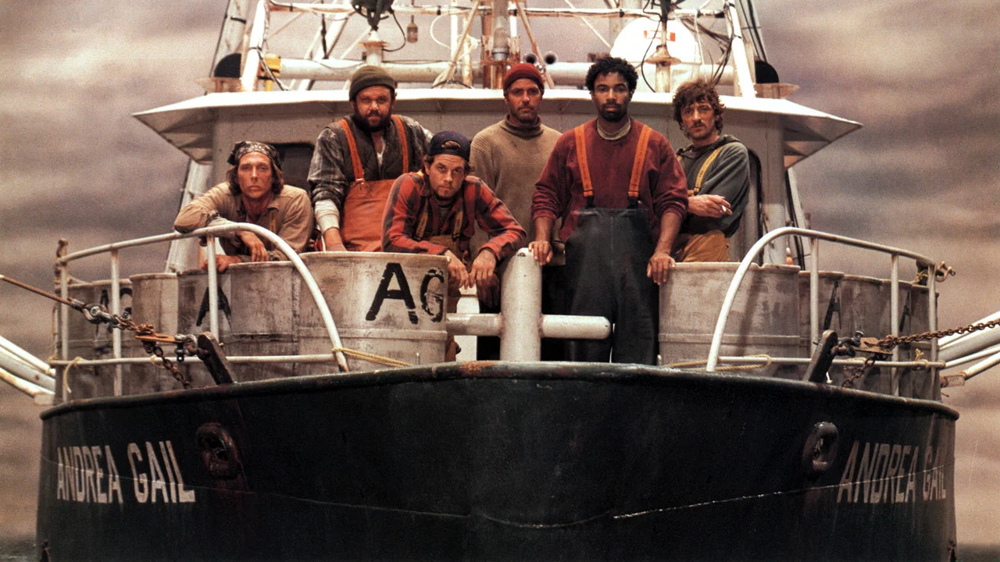
导演与主创 · 他们的历史作品
 特洛伊
特洛伊 大魔域
大魔域 空军一号
空军一号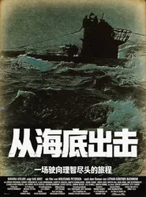
从海底出击
 十一罗汉
十一罗汉 地心引力
地心引力 十二罗汉
十二罗汉 十三罗汉
十三罗汉 泰迪熊
泰迪熊 变形金刚4：绝迹重生
变形金刚4：绝迹重生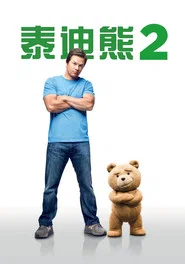
泰迪熊2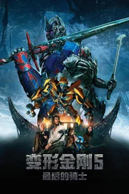
变形金刚5：最后的骑士短评（轻微剧透）
轻微剧透：真正的转折在他们决定掉头——不是不知道风暴来了，是他们已经装满了鱼，回去要扔掉一半，所以他们选择再赌一次。轻微剧透：彼得森最扎实的一处是前半段：讨价还价、借钱、分手、再上船，这些琐碎全都是为了让「赌一把」这件事有重量。结尾没有英雄镜头，只有岸上的人开始一个一个打电话——这部片把灾难片的高潮放在了别处。
为什么值得一看
想看「灾难片怎么处理一个没有救援的故事」的人；能接受前半段铺垫长、部分情感戏煽情、特效在今天看略旧的观众。PG-13，含海难与溺水画面，建议初中以上观看。内地未映。看完想继续：《一切尽失》《怒海救援》《海洋深处》。
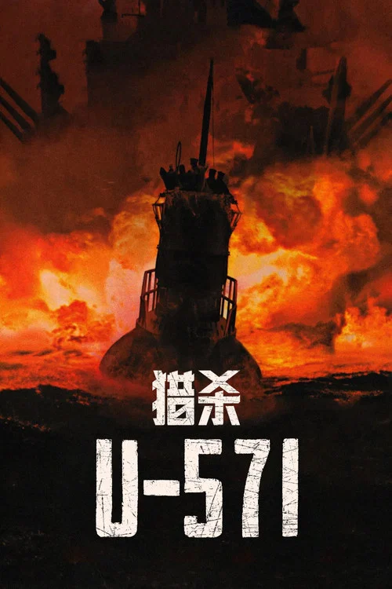
猎杀U-571 U-571
「我们已经上来了。现在要把它开回去。」
剧情梗概
1942 年大西洋。德军 U 型潜艇用「狼群」战术切断了盟军的补给线，而盟军破不开它们的密码。美国海军上尉泰勒带着一队人伪装成德军，登上一艘被击伤的 U-571，要抢走艇上的恩尼格玛密码机。他们抢到了，但潜艇也被打坏了，而德国人在后面追。
亮点
- 乔纳森·莫斯托自编自导，联合编剧是大卫·阿耶——后来《训练日》《狂怒》的编剧。
- 成本约 6200 万美元，全球票房约 1.276 亿美元；奥斯卡最佳音效剪辑提名。
- 影片上映后引发真实争议：最早缴获恩尼格玛机的主要是英国皇家海军，片方后来在片尾字幕里加了一行说明向英国水兵致意。
- 马修·麦康纳演泰勒，一个被许诺过却始终没拿到艇长任命的副艇长；比尔·帕克斯顿演士官达尔格伦，哈维·凯特尔演枪炮长。
- 邦·乔维演轮机长，这是他少数几次在主流电影里的重要角色；托马斯·克莱舒曼演德军艇长。
- 豆瓣 8.1 / 烂番茄 68% / Metacritic 62 / IMDb 6.6：本期豆瓣并列最高。
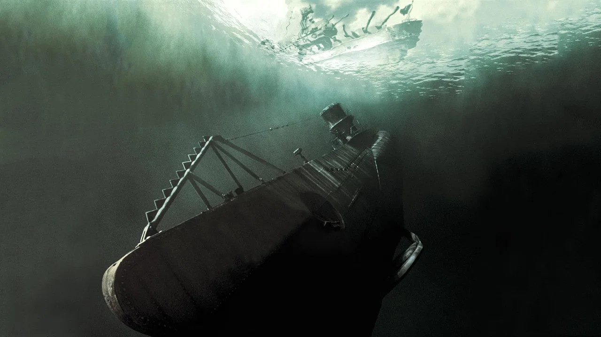
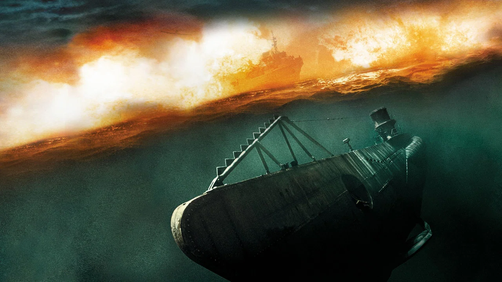
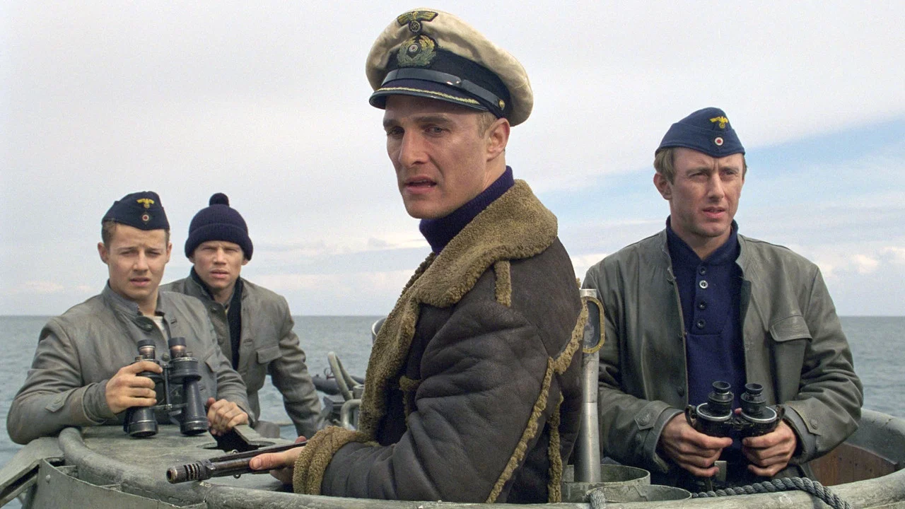
导演与主创 · 他们的历史作品
 终结者3：机器的觉醒
终结者3：机器的觉醒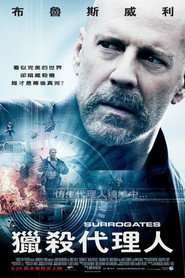
未来战警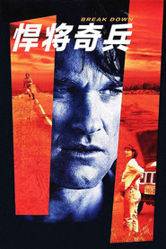
悍将奇兵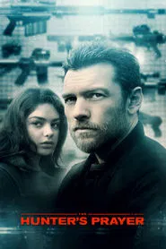
杀手的祷告
 星际穿越
星际穿越 达拉斯买家俱乐部
达拉斯买家俱乐部 欢乐好声音
欢乐好声音 绅士们
绅士们 泰坦尼克号
泰坦尼克号 明日边缘
明日边缘 夜行者
夜行者短评（轻微剧透）
轻微剧透：真正的转折在他们抢到密码机之后——任务完成了，可潜艇被打坏了、发报机没了、原班人马死了一半，剩下的问题全都变成了「怎么开回去」。轻微剧透：这部片把潜艇片拍成了一次换位：他们穿着德军的制服、开着德军的设备、用德军的方式操作，到后面你几乎忘了谁是谁。结尾他们把密码机交出去、自己沉进海里的镜头，是全片唯一一次让摄影机离开那艘船。
为什么值得一看
想看「潜艇片怎么把一次任务拆成三段」的人；能接受史实改动较大（主要缴获由英军完成，片尾有说明）、部分桥段夸张的观众。PG-13，含战争与溺水画面，建议初中以上观看。内地未映。看完想继续：《红潮风暴》《K-19：寡妇制造者》《从海底出击》。
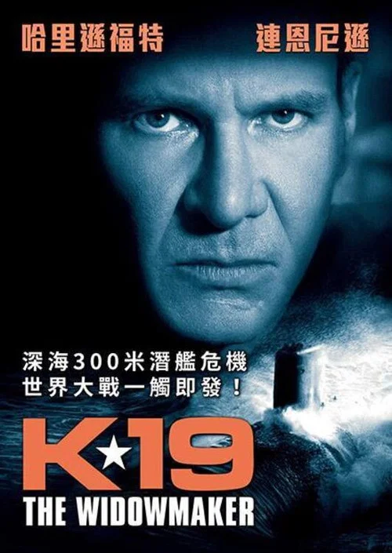
K-19：寡妇制造者 K-19: The Widowmaker
「这不是一次任务。这是一次献祭。」
剧情梗概
1961 年，冷战最紧的那一年。苏联第一艘战略核潜艇 K-19 要在北极试射导弹，而它是一艘赶工出来的船：反应堆没人愿意修，管道是临时接的。新任艇长沃斯特里科夫接手后坚持按计划出海。出海第四天，反应堆冷却系统失效了；能把它修好的人，得进到一个没有任何防护的舱室里去。
亮点
- 凯瑟琳·毕格罗导演并出任制片——她是首位拿到奥斯卡最佳导演的女性，本片是她拍《拆弹部队》之前的最后一部英语长片。
- 成本约 1 亿美元，全球票房仅约 6500 万美元，是当年著名的票房失利。
- 哈里森·福特演艇长阿列克谢·沃斯特里科夫，连姆·尼森演原任艇长波列宁——一个被降职却留下来的人；两个人的关系是全片真正的轴。
- 片名「寡妇制造者」只是电影里的叫法；真实历史中这艘潜艇在 1961 年 7 月 3 日事故之后才有了外号，叫「广岛」。
- 影片在俄罗斯上映时，52 名 K-19 老兵被请到圣彼得堡参加首映；他们指出片中大量史实与技术改动，但肯定了福特的那场戏。
- 豆瓣 7.8 / 烂番茄 59% / Metacritic 58 / IMDb 6.7：专业评价中庸，也是本期片长最长的一部（138 分钟）。
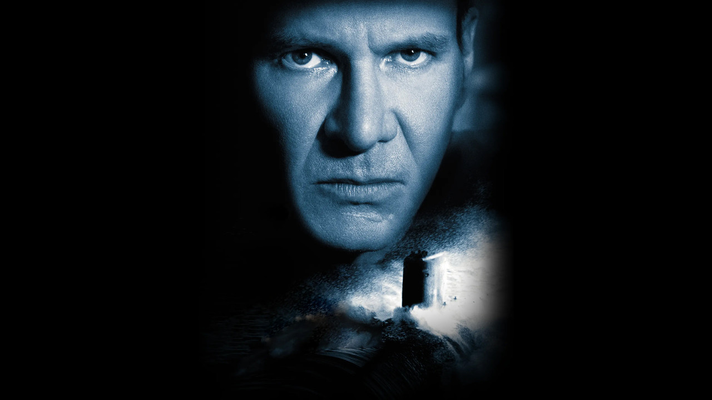
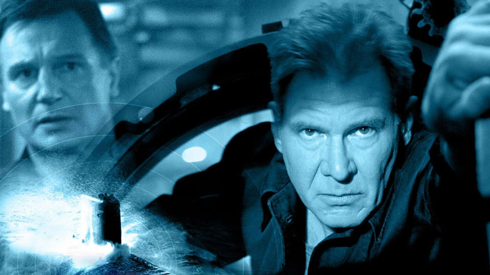
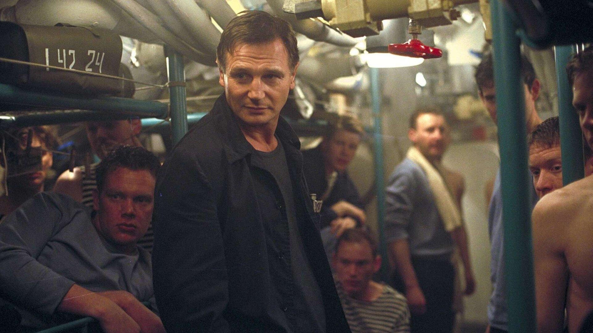
导演与主创 · 他们的历史作品
 拆弹部队
拆弹部队 猎杀本·拉登
猎杀本·拉登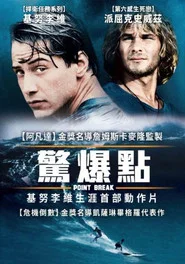
惊爆点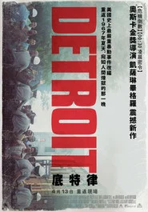
底特律
 银翼杀手
银翼杀手 夺宝奇兵：法柜奇兵
夺宝奇兵：法柜奇兵 星球大战4：新希望
星球大战4：新希望 夺宝奇兵3：圣战奇兵
夺宝奇兵3：圣战奇兵 辛德勒的名单
辛德勒的名单 星球大战1：幽灵的威胁飓风营救
星球大战1：幽灵的威胁飓风营救 蝙蝠侠：侠影之谜
蝙蝠侠：侠影之谜短评（轻微剧透）
轻微剧透：真正的转折不在反应堆出事，在他们发现没有人有防护服——前面几十分钟所有的赶工、抢进度、不肯停，到这一刻全部变成了具体的代价。轻微剧透：毕格罗最狠的一处是把两个艇长放在同一艘船上：一个要完成任务，一个要保住人，而他们谁都没有错。结尾那场老兵聚会的戏是全片唯一一次离开潜艇镜头，也是这部片真正想说的东西——那些人后来怎么样了。
为什么值得一看
想看「潜艇片怎么被拍成一部关于责任的作品」的人；能接受 138 分钟偏长、前半段铺垫慢、史实改动较多的观众。PG-13，含辐射伤害画面，建议初中以上观看。内地未映。看完想继续：《红潮风暴》《猎杀U-571》《库尔斯克》。
汉江怪物 The Host
「它在汉江里。」
剧情梗概
汉江边上一家人经营着一家小店：糊涂的父亲康斗、爷爷熙峰、失业的叔叔南日、射箭总在关键时刻掉链子的姑姑南珠，还有康斗的女儿贤书。一天，一个从桥墩上爬下来的东西冲进了人群，把贤书叼走了。官方说这是病毒，要封锁江边。这一家人不等了，他们自己进去了。
亮点
- 奉俊昊自编自导，这是他的第三部长片；往期第 40 期推过的《雪国列车》也是他导的。
- 成本约 1100 万美元，韩国观影人次超过 1300 万，全球票房约 8943 万美元——在《寄生虫》之前，它是韩国电影全球票房的纪录保持者。
- 片中怪物由新西兰的维塔工作室设计、美国的 The Orphanage 做特效；它那副非鱼非兽的样子是奉俊昊特意要求的——不要酷，要脏。
- 宋康昊演父亲康斗，一个又糊涂又拼的中年人；裴斗娜演姑姑南珠，那个射箭总在关键时刻掉链子的人。
- 影片取材于真实的麦克法兰德事件（驻韩美军向汉江倾倒废液），开头那场戏直接把这件事拍了出来。
- 豆瓣 7.6 / 烂番茄 93% / Metacritic 85 / IMDb 7.1：本期专业评价最高，烂番茄 93% 与 Metacritic 85 都是本期第一。
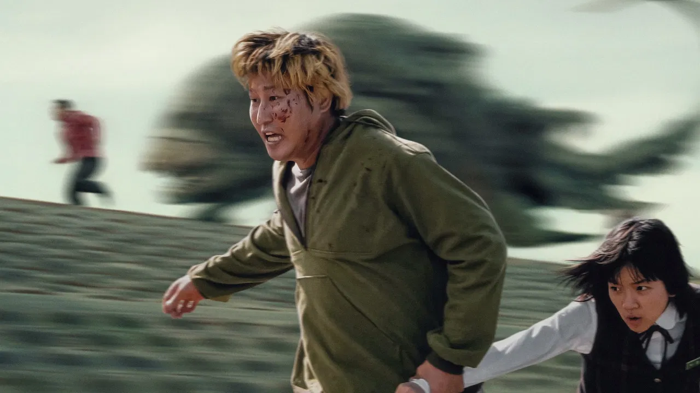
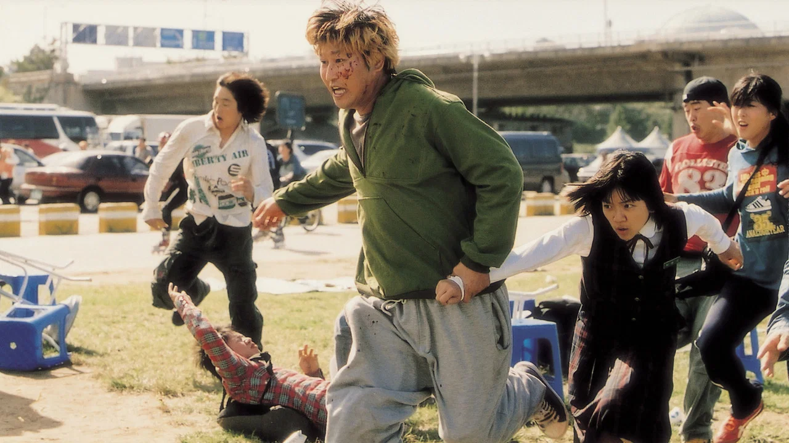
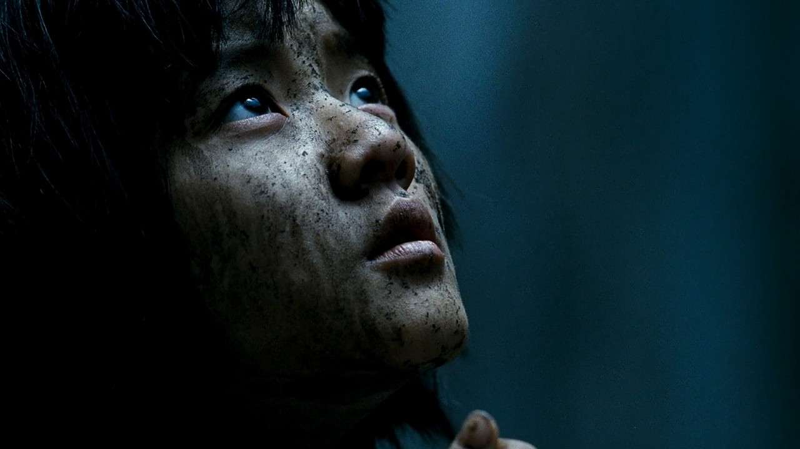
导演与主创 · 他们的历史作品

 寄生虫
寄生虫 雪国列车
雪国列车 杀人回忆
杀人回忆 玉子
玉子 寄生虫雪国列车杀人回忆
寄生虫雪国列车杀人回忆 我要复仇
我要复仇
 云图我要复仇
云图我要复仇 木星上行
木星上行 月球叛军：火之女
月球叛军：火之女短评（轻微剧透）
轻微剧透：真正的转折不在怪物出现，在官方宣布这是病毒——从那一刻起，这家人要对抗的不是一条鱼，是一整套应急机制。轻微剧透：奉俊昊把怪物片拍成了家庭剧：这四个人各有各的毛病，而救孩子这件事逼着他们一个个把自己修好。结尾康斗独自守在江边小店里的镜头，是全片唯一一次让摄影机停下来——这部片真正讲的东西在那间店里，不在水里。
为什么值得一看
想看「怪物片怎么同时是一部社会片」的人；能接受政府形象被写得相当不堪、怪物特效有年代感、中段节奏偏慢的观众。含怪物袭击与死亡画面，建议初中以上观看。内地上映过，流媒体可看。看完想继续：《釜山行》《极度深寒》《哭声》。
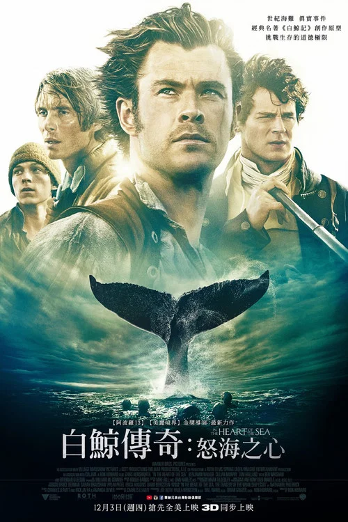
海洋深处 In the Heart of the Sea
「问题不是能不能回去。是回去的路上还剩几个人。」
剧情梗概
1820 年，新英格兰捕鲸船「埃塞克斯号」在南太平洋被一头巨型抹香鲸撞沉。二十名船员挤上三艘小艇，带着有限的淡水和饼干，漂流了九十天。这部片从一个幸存者把这件事讲给一位年轻作家听开始——那位作家后来写了一本叫《白鲸》的小说。
亮点
- 朗·霍华德导演，改编自纳撒尼尔·菲尔布里克 2000 年的非虚构作品《海洋深处》；这是《白鲸》真正的原型事件。
- 成本约 1 亿美元，全球票房约 9320 万美元，是朗·霍华德生涯里票房失利的作品之一。
- 克里斯·海姆斯沃斯演大副欧文·蔡斯，本·卫肖演赫尔曼·梅尔维尔——那位听故事的作家；本杰明·沃克演船长波拉德。
- 大量海上镜头是在西班牙加那利群岛外海实拍的，剧组在真船上搭了三艘小艇的复制品，并长时间泡在海上完成拍摄。
- 影片把「梅尔维尔听故事」这条线放在最后：前面九十天的漂流，是一段被讲出来的回忆。
- 豆瓣 7.5 / 烂番茄 42% / Metacritic 47 / IMDb 6.9：本期专业评价倒数第二，华语观众明显高于欧美影评。
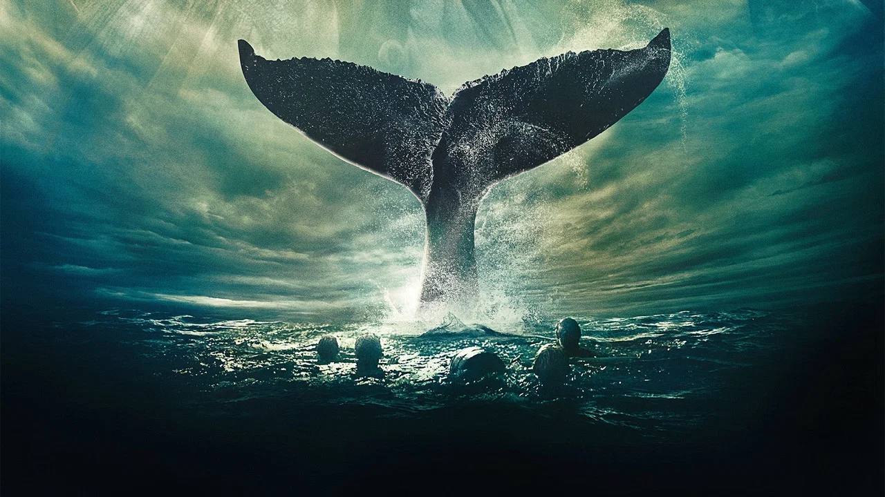
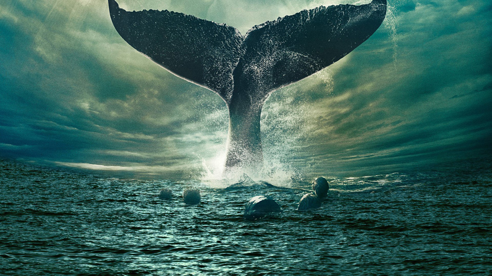
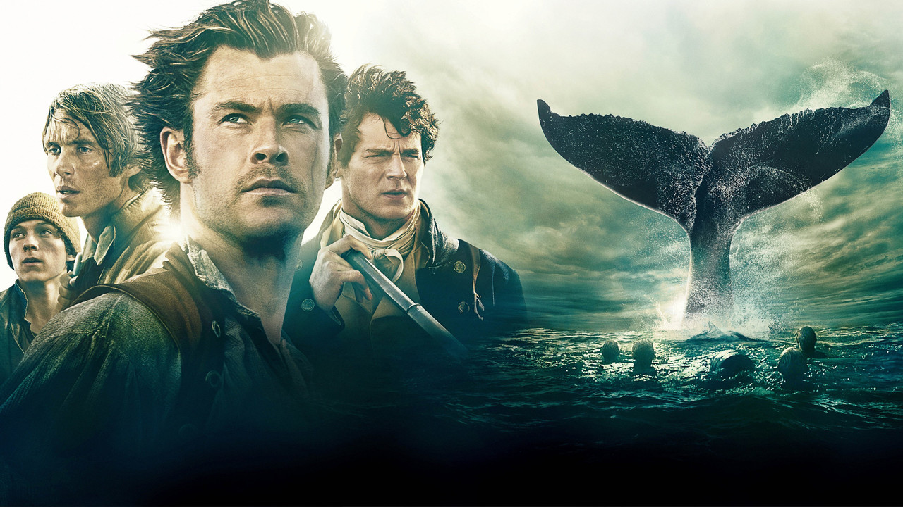
导演与主创 · 他们的历史作品
 美丽心灵
美丽心灵
 雷神
雷神 雷神3：诸神黄昏
雷神3：诸神黄昏 雷神2：黑暗世界
雷神2：黑暗世界 复仇者联盟2：奥创纪元
复仇者联盟2：奥创纪元 吸血鬼猎人林肯
吸血鬼猎人林肯短评（轻微剧透）
轻微剧透：真正的转折不在鲸撞船，在他们决定往哪个方向划——最近的岛在一千多海里外，顺风的那个方向却更远，他们选了后者。轻微剧透：这部片最难受的一段不是撞船，是漂流到第三十天之后的那些决定：谁先死、吃什么、谁还能站起来。朗·霍华德把这段拍得很直白，没有转场、没有音乐，只留海和太阳。结尾梅尔维尔坐下来开始写，是全片唯一一次给这段历史一个出口。
为什么值得一看
想看「海难片怎么处理九十天的饥饿」的人；能接受节奏偏慢、情感戏略煽情、部分特效不够精致的观众。PG-13，含同类相食相关情节与海难画面，建议高中以上观看。内地未映。看完想继续：《完美风暴》《一切尽失》《少年派的奇幻漂流》。
鲨海 47 Meters Down
「氧气还剩十九分钟。」
剧情梗概
一对姐妹去墨西哥度假。姐姐凯特劝刚被男友甩掉的丽莎去潜水看鲨鱼，说有笼子，很安全。笼子下水了，然后吊缆断了——她们连人带笼沉到 47 米深的海底，周围是大白鲨，气瓶里的氧气只够几十分钟，而救援队说要等到天亮。
亮点
- 约翰内斯·罗伯茨自编自导，这是他第一次拿到较大规模的院线发行；影片大部分水下戏是在伦敦与多米尼加的水箱里拍的。
- 成本约 550 万美元，全球票房约 6170 万美元（北美 4430 万），是 2017 年票房最高的独立电影之一。
- 影片最初的发行方打算直接出碟，片名一度改成《在深处》；新发行方接手后改回《47 Meters Down》并送进院线。
- 曼迪·摩尔演丽莎，克莱尔·霍尔特演凯特；全片大部分时间只有两个人、一个笼子和一块氧气表。
- 深水减压与氮醉被写进了情节：她们越往上浮，判断力越差——这是这部片真正的恐怖来源。
- 豆瓣 6.0 / 烂番茄 53% / Metacritic 52 / IMDb 5.7：本期四个平台全部最低。
导演与主创 · 他们的历史作品

 生化危机：欢迎来到浣熊市
生化危机：欢迎来到浣熊市 鲨海逃生
鲨海逃生 只杀陌生人2：狩猎之夜
只杀陌生人2：狩猎之夜 无敌破坏王2：大闹互联网
无敌破坏王2：大闹互联网短评（轻微剧透）
轻微剧透：真正的转折在她们发现氧气表上的数字不对——不是装备坏了，是深水让她们算错了，而慌乱本身正在消耗氧气。轻微剧透：这部片把「看不清」做成了主要手段：能见度低、灯光只照到一米、你永远不知道笼子外面有几条。结尾那场分不清是幻觉还是真的戏，是它最有争议的一笔，也是它跟同类片拉开差距的地方。
为什么值得一看
想看「深海恐惧能被拍到什么程度」的人；能接受人物决策会让你着急、中段重复、结尾处理有争议的观众。PG-13，含鲨鱼袭击与受伤画面，恐水与幽闭恐惧者慎看。内地公映过，流媒体可看。看完想继续：《鲨滩》《深海狂鲨》《一切尽失》。
库尔斯克 Kursk
「他们在下面。他们还在敲。」
剧情梗概
2000 年 8 月 12 日，巴伦支海。俄军演习中，核潜艇 K-141「库尔斯克号」发生爆炸后沉没，118 名官兵在舰上。影片三条线同时推进：艇内还没沉没的那部分人、岸上等消息的家属、以及一个想进去救人的英国军官——他要的只是一份许可，而许可迟迟不来。
亮点
- 托马斯·温特伯格导演（《家宴》《狩猎》《酒精计划》），改编自罗伯特·摩尔的纪实作品；这是他第一次拍英语大片。
- 成本约 2000 万美元，全球票房远低于成本，是温特伯格生涯里商业成绩最差的一部。
- 科林·费尔斯演英国海军准将戴维·罗素，那个一遍遍要许可的人；马提亚斯·修奈尔演艇员米哈伊尔，蕾雅·赛杜演他的妻子。
- 马克斯·冯·西多演一位老将军，这是他晚年最后几部电影之一。
- 配乐由亚历山大·德斯普拉写；摄影是安东尼·多德·曼托，他用大量手持镜头与实景水箱拍出了艇内的逼仄。
- 豆瓣 6.8 / 烂番茄 55% / Metacritic 50 / IMDb 6.6：本期专业评价倒数第三，也是本期唯一一部以真实潜艇灾难为原型的电影。
导演与主创 · 他们的历史作品

 酒精计划
酒精计划 家宴
家宴 远离尘嚣
远离尘嚣 红雀
红雀 丹麦女孩
丹麦女孩 永生守卫
永生守卫
 国王的演讲
国王的演讲 王牌特工：特工学院
王牌特工：特工学院 王牌特工2：黄金圈
王牌特工2：黄金圈 BJ单身日记
BJ单身日记短评（轻微剧透）
轻微剧透：真正的转折不在爆炸，在岸上——家属们被一遍遍告知「很快就有消息」，而消息从来不来。轻微剧透：温特伯格把这部片拍成了一次「等待」的比较：艇里的人在等水，家属在等电话，英国军官在等签字，而三边的等待互不相通。结尾那场家属集合的戏是全片最狠的一处：它没有指责谁，只是把所有人放在同一个礼堂里。
为什么值得一看
想看「灾难片怎么拍岸上那一半」的人；能接受 117 分钟里真正的灾难只有开头十几分钟、后半段节奏慢、部分人物写得单薄的观众。PG-13，含爆炸与溺水画面，建议高中以上观看。内地未映。看完想继续：《K-19：寡妇制造者》《完美风暴》《红潮风暴》。